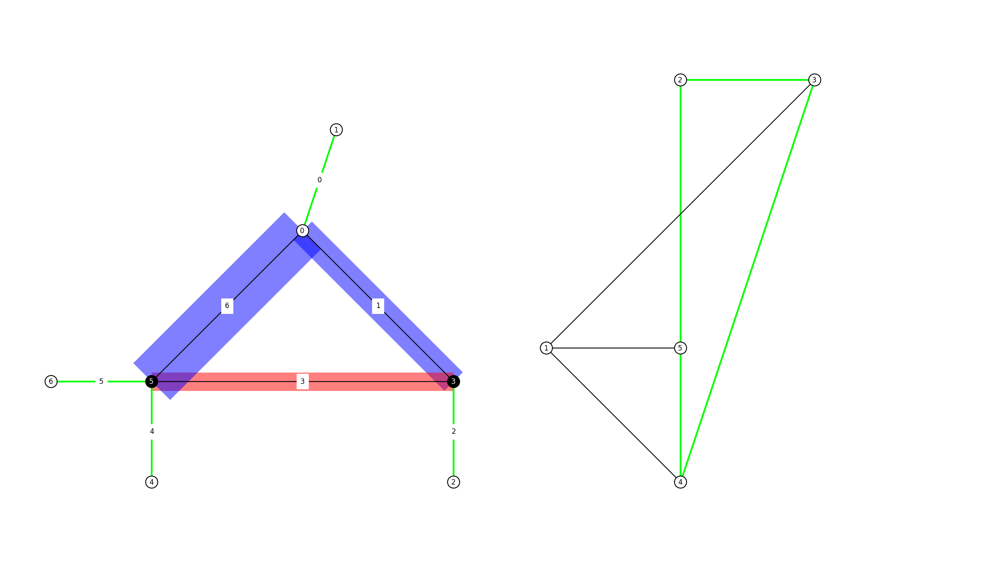

Graph Statics

"""Compute the equilibrium of a simple statically determined system and
visualise the result using a form and force diagram.
author: Tom Van Mele
email: vanmelet@ethz.ch
"""
from __future__ import print_function
from __future__ import absolute_import
from __future__ import division
import compas
import compas_ags
from compas_ags.diagrams import FormDiagram
from compas_ags.diagrams import ForceDiagram
from compas_ags.viewers import Viewer
from compas_ags.ags import graphstatics
form = FormDiagram.from_obj(compas_ags.get('paper/gs_form_force.obj'))
force = ForceDiagram.from_formdiagram(form)
form.set_edge_force_by_index(1, -30.0)
graphstatics.form_update_q_from_qind(form)
graphstatics.force_update_from_form(force, form)
left = list(form.vertices_where({'x': 0.0, 'y': 0.0}))[0]
right = list(form.vertices_where({'x': 6.0, 'y': 0.0}))[0]
viewer = Viewer(form, force, delay_setup=False)
viewer.draw_form(
vertexsize=0.15,
vertexcolor={key: '#000000' for key in (left, right)},
vertexlabel={key: key for key in form.vertices()},
edgelabel={uv: index for index, uv in enumerate(form.edges())}
)
viewer.draw_force(
vertexsize=0.15,
vertexlabel={key: key for key in force.vertices()}
)
# viewer.save('../docs/_source/_images/example_graphstatics.png')
viewer.show()
Downloads
None